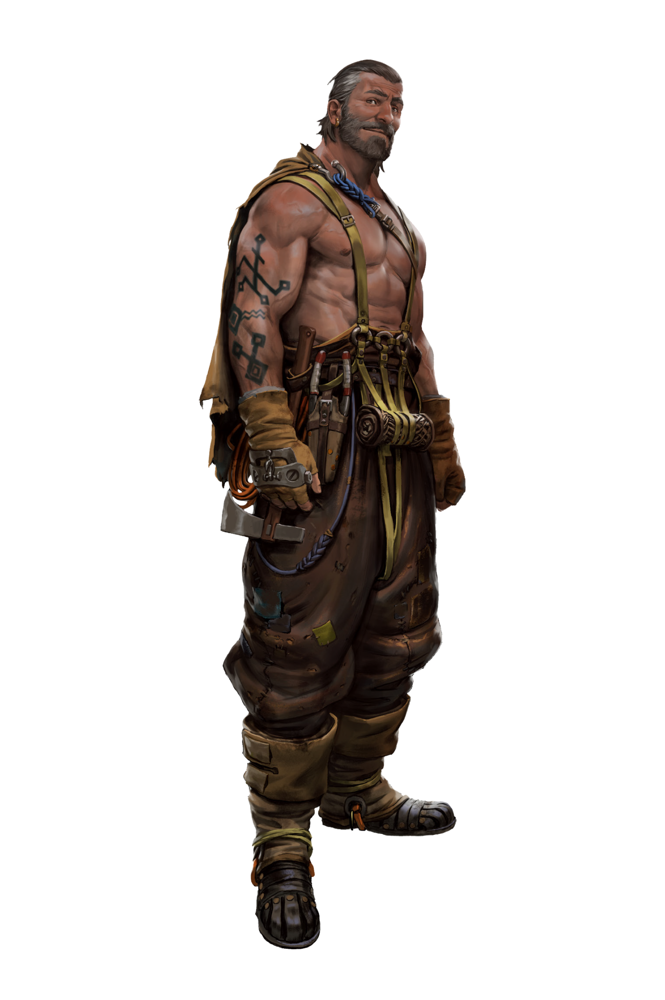

CLAN DOSSIER
Touloni
The fishermen remain the foundation of the Clan. They are its inner core.
Clans of the Rhône pp. 5–7

CALLOUS
Briefing
Delmar stands with his back towards the dawn. Against the light, his face is but a silhouette, all blackness and sharp angles. His hair is graying, his skin is sunburnt, he carries heavy ropes and nets over his shoulders.
He jumps aboard his boat. With a serious facial expression, he looks at his realm – the piers, the fishing boats, and the chain cables of Port Lagagne. Satisfied, he pounds his own chest and nods at himself appreciatively. His sons almost convulse with laughter. They love it when their old man mimics great Hamza Abubakar III., the ruler of Toulon. The joke makes all the toiling out on the sea more bearable. A long day in the hot sun lies ahead of them, and humor is a good traveling companion.
Callous
The Anabaptists clung to the Touloni and recruited feverishly. Then came the Spitalians with their rules and regulations and in the end, the Chroniclers with their bossiness and control mania.
Then, the Cults disappeared, and the city and the Clan faded into insignificance. “Rien ne va plus” - the Touloni realized that the heroics of the Cults had been nothing but empty promises.
When the Neolibyans arrived in the port 10 years ago their home was close to collapsing. It was time to form new alliances, to turn their backs on the European besiegers and look for shelter with the Africans. What did the Touloni have to lose, after all? In fact, they gained a lot – autonomy, the right to self-government, free trade. The Neolibyans had brought peace and prosperity to the five great families of Toulon. Since then the Anciens of the families have ensured that the many scions of the various branches of the family learn the basics of education: reading, writing, and maths.
As soon as Chiots reach the age of 13, they are old enough to contribute to the common good of the city and so must choose – either they serve in the Beau Monde for at least five years, join the fishermen and carriers in the harbor, or negotiate a student loan from the Grantors with the help of the Anciens. Those loans usually come with an option for a future business deal. The Africans invest in tomorrow – those who successfully graduate from the University and have internalized the secrets of trading will need Dinars later to start their own companies. Even if some Touloni adopt the African lifestyle, though, the fishermen remain the foundation of the Clan. They are its inner core.
The Anciens are influential enough in the surrounding region to purchase real estate and concessions for the Artisans and Marins of the Clan in smaller settlements. Sometimes, whole branches of the family move out, and new workshops or trading posts that will pay taxes to the Touloni in the future and expand the Clan’s trade network arise on an almost monthly basis. For about a year now, the Clan has also had small outposts in Perpignan, Montpellier, and even Toulouse. Its influence grows.
Stranded
The chaos that erupted through the streets of Toulon during the uprising of the Iron Brothers has caused a schism to rip through the ranks of the Touloni. Amidst the turmoil, the Beau Monde found themselves fighting side by side with the Resistance to take back their home, but at the climax of the events the Frankan freedom fighters turned against the Africans - the closest allies of the Touloni.
In the confusion there was no time to consider the situation and the Beau Monde continued to fight with their European brethren, but now that the fires have died down the Touloni are forced to reflect on their actions. They pick through the rubble of their city, lost in thought: who was truly in the right? And where should the Clan’s allegiance truly lie if – when – the conflict reignites? The five Anciens gather in tense deliberations over the future nature of the Touloni and their home. They can’t decide amongst themselves, the discussions only result in endless loops. They need a single voice to unify them. They prepare to elect a new Patriarche. He will lead the Clan forward.
Irregulars
Ever since the Scourgers started keeping order in Toulon, the Beau Monde has only had a purely representative function. While the militia members are assigned as guards for transport ships sailing along the coast, they never face any real conflicts. This is why they act as irregulars to collect necessary combat experience. Any member can be released from pay for a certain amount of time to hire themselves out in the coastal villages or strengthen the ranks of the Resistance, an assignment which is not detrimental to the reputation and the battle readiness of the militia. Quite the opposite.
THE CLAN
Hierarchy & Ranks
Select any rank to read its prerequisites, effect, and equipment.
THE CLAN